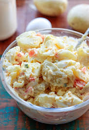

Um pouco sobre a nossa história
Quando José Antenor Pereira(seu Zé) se aposentou decidiu abrir uma lanchonete, mas quando foi realiza-lo descobriu que, a cada dois anos, acontecia uma competição de hamburguer, com o prêmio de vale grátis na compra das melhores carnes por dois meses, e uma medalha de primeiro colocado. Após este fato ele decidiu ir um uma viagem pelo mundo atrás da formula do hamburger perfeito. Após anos viajando ele conseguiu o hamburger perfeito, campeão invicto por 10 anos do campeonato. Desde então viemos crescendo, se aprimorando e buscando excelência nos relacionamentos com fornecedores, funcionários, parceiros e clientes.
Com 25 anos de sucesso recebemos por 11 anos o selo de Excelência em franchising da ABF, premiados pela “Pequenas empresas Grandes Negócios” como a melhor rede de alimentação do Brasil, além do Prêmio de Excelência da ABF por termos mais de 10 selos.
Sobre nós
- Fundada em 1997.
- A Lanchonete do Seu Zé surgiu com a proposta norte americana da agilidade de lanches feitos na hora.
- Para nós, qualidade de produtos, serviços, atendimento diferenciado, preço justo e satisfação do cliente são fundamentais e nos impulsiona ao aprimoramento e crescimento da marca
- Temos um ótimo funcionamento com funcionários qualificados e experientes, dispostos a auxiliar você e sua família para que tenha a melhor experiência ao saborear nossos lanches.
- ingredientes selecionados e muito bem higienizados. Contendo muitas variedades de sabores para sua refeição do dia a dia.
- Temos lanches diferentes, como o clássico crossaint de óreo.
- Estamos sempre inovando com parcerias que agreguem valores ao nosso produto melhorando a qualidade e mantendo o preço justo.
- Temos produtos diferenciados, fornecedores certificados pela qualidade.
- Hambúrgueres de pura carne Angus e a famosa maionese produzida pelo Zé.
- Cardápios impressos e digitais.